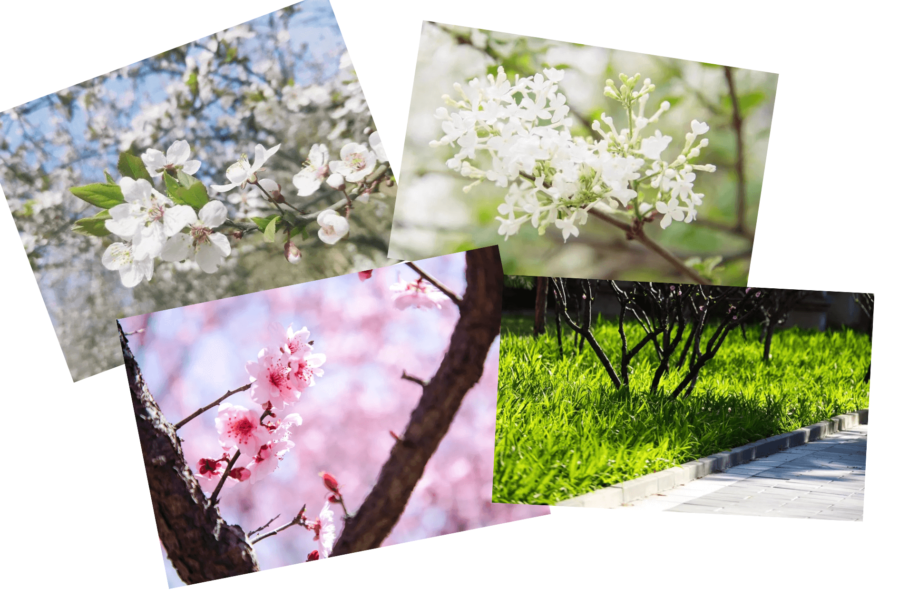
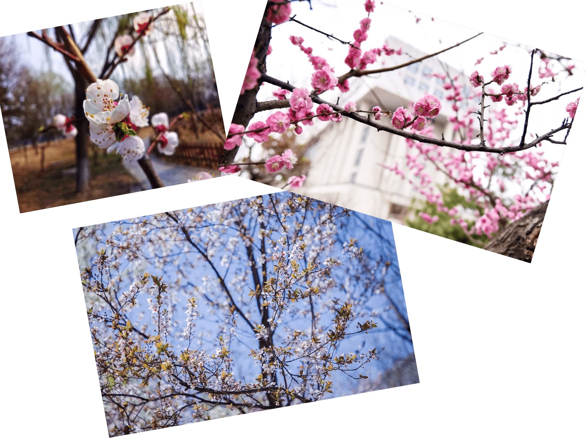
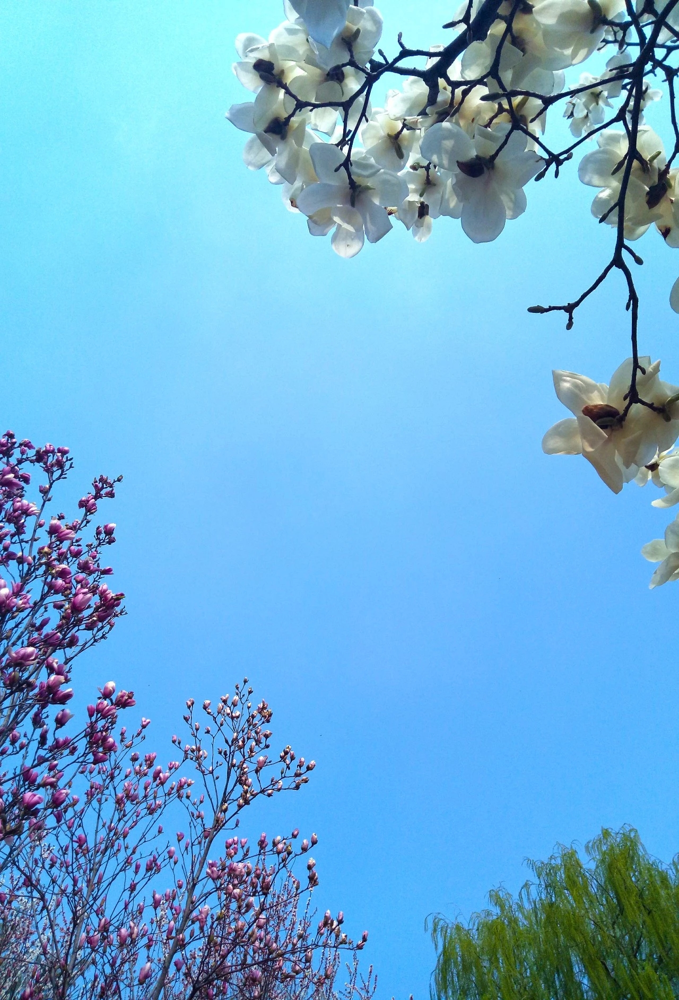

8102年已经过去了四个多月，昨天又是清明节，可惜又没放假，其实也没什么可惜的，反正对我这种宅来说也无所谓，一没有放小假的概念，二又没有强烈的希冀去哪哪哪。但是说到放假，总不会让人抵触的，不是吗？
我想说些什么，又不知道说些什么，一直以后总有一段一段时间的让我想起过去的那些事情，有时候是那群人，有时候是那些事。
有天晚上我回去的路上经过篮球场，看见或三四五个或一群人在篮球场的半场打球，我也不知道我想这些干嘛，我也不知道为什么会能有感触，可能在怀念那些人吧，那时候为了打球宁愿翘课的人儿吧……但是我只在刚开始的时候打过几次，但也只是在其中混着的，本着人多热闹不怕事的原则，在球场上跑来跑去，肆无忌惮的挥霍汗水，释放青春。
呵，真是矫情……
往事一件一件，仿佛就在去年，或者上周，感觉触手可得，现实又可望不可即……
说些别的，现在的学校里的花都开了好多，但在我的印象中，另一个我生活了三年的地方是没有多少花的，记忆中只有树，大片大片绿油油的树，不然就是草，尤其到了夏天，长得更茂盛，白天上课经常走神的时候，就盯着窗子外面那过楼高的数，和它在太阳下投下的影，以及，被点到的名……
嗯，我就想到了这些，就写下这些，我也不知道我想传达什么。可能是纯粹为了弥补一些我打完一天游戏后内心的愧疚，也可能就是单纯的想家想念那些人……
春天到了，又到了动物们 的季节了……
这句话里，藏着几个人的坏笑？
还有就是，一些花花草草了吧……
二〇二一年十二月二十九日 修
  
9102年 4月
不知所言